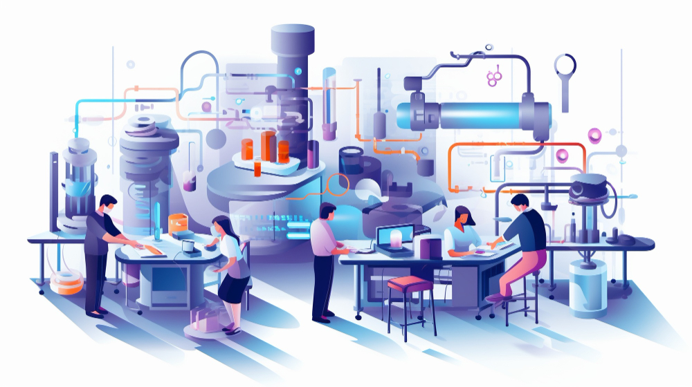
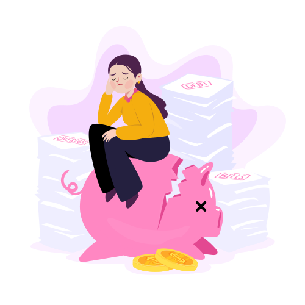
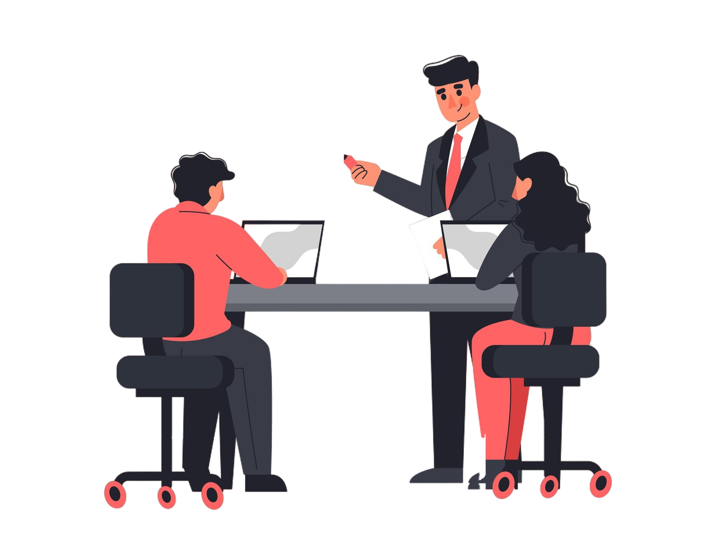
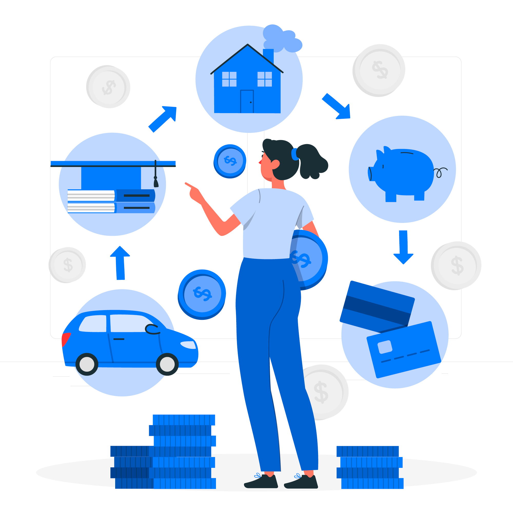

ومن خلال الاستثمار في البحث والتطوير، تستطيع الشركة تطوير منتجات وتقنيات جديدة، وفتح مصادر دخل جديدة وضمان الاستدامة على المدى الطويل.
الفائدة: - زيادة الأصول غير الملموسة بمبلغ 100 ألف ريال سعودي سنوياً.
الأثر على المدى الطويل: زيادة الأصول غير الملموسة، مثل براءات الاختراع والملكية الفكرية، وتحسين تقييم الشركة.
من خلال الاستثمار في البحث والتطوير، تستطيع الشركة تطوير منتجات وتقنيات جديدة، وفتح مصادر دخل جديدة وضمان الاستدامة على المدى الطويل.
الفائدة: - نمو الإيرادات المتوقع بنسبة 10-15% سنويًا بعد إطلاق المنتج بنجاح، مما يعني 150 ألف ريال سعودي إضافية في الإيرادات السنوية.
الأثر على المدى الطويل: تعزيز سمعة العلامة التجارية كمبتكرة في مجال العناية بالبشرة الصديقة للبيئة.
تخصيص الأموال لتطوير تقنيات جديدة وحلول برمجية وخدمات تقنية معلومات مبتكرة.
الفائدة: - إمكانية توليد 800 ألف ريال سعودي إضافية من الإيرادات سنويًا من خلال خطوط المنتجات والحلول الجديدة.
الأثر على المدى الطويل: وضع الشركة كشركة رائدة في مجال الابتكار؛ والنمو المستدام على المدى الطويل.

من خلال توسيع مرافق التصنيع، تستطيع الشركة تلبية الطلب المتزايد، وتقليل الاختناقات الإنتاجية، والاستفادة من اقتصاديات الحجم.
الفائدة: زيادة الطاقة الإنتاجية والكفاءة وزيادة الأصول الثابتة بمبلغ 500 ألف ريال سعودي.
الأثر على المدى الطويل: تعزيز الأصول الثابتة، مثل الآلات والمعدات، ودعم النمو المستقبلي.
من خلال توسيع مرافق التصنيع، تستطيع الشركة تلبية الطلب المتزايد، والحد من الاختناقات الإنتاجية، والاستفادة من اقتصاديات الحجم.
الفائدة: - زيادة محتملة في الإيرادات بمقدار 200 ألف ريال سعودي سنويًا.
الأثر على المدى الطويل: زيادة في الطاقة الإنتاجية بنسبة 50%، مما يسمح للشركة بتلبية الطلب المتزايد.
تعزيز البنية التحتية لتكنولوجيا المعلومات في الشركة من خلال بناء أو استئجار مراكز بيانات إضافية وترقية الأنظمة الحالية.
الفائدة: - يمكن أن تؤدي زيادة القدرة إلى زيادة الإيرادات بمقدار 400 ألف ريال سعودي سنويًا من خلال ضم عملاء جدد.
الأثر على المدى الطويل: تعزيز الموثوقية وقابلية التوسع وتقديم خدمة أفضل والاحتفاظ بالعملاء على المدى الطويل.

ومن خلال إعادة التفاوض على شروط الديون أو توحيد القروض ذات الفائدة المرتفعة، تستطيع الشركة خفض إجمالي تكلفة ديونها وتعزيز ميزانيتها العمومية.
الفائدة: - تخفيض مصاريف الفائدة بمبلغ 40 ألف ريال سعودي سنويا.
الأثر على المدى الطويل: خفض عبء خدمة الدين، وتحرير التدفق النقدي للاستثمار أو توزيع الأرباح.
من خلال إعادة التفاوض على شروط الدين أو توحيد القروض ذات الفائدة المرتفعة، يمكن للشركة خفض إجمالي تكلفة ديونها وتعزيز ميزانيتها العمومية.
الفائدة: - تحسين التدفق النقدي، وتحرير 50 ألف ريال سعودي سنويًا للاستثمارات الأخرى.
الأثر على المدى الطويل: خفض مدفوعات الفائدة بنسبة 2% سنويًا، وتوفير 6 آلاف روبية سنويًا.
إعادة تمويل الديون القائمة لخفض أسعار الفائدة أو تمديد فترات السداد لتحسين التدفق النقدي.
الفائدة: - توفير 300 ألف ريال سعودي من أقساط الفائدة سنويًا.
الأثر على المدى الطويل: تحسين الاستقرار المالي وزيادة السيولة.
من خلال تنفيذ تدابير خفض التكاليف مثل التصنيع المرن أو الاستعانة بمصادر خارجية للأنشطة غير الأساسية، يمكن للشركة تعزيز صافي أرباحها.
الفائدة: انخفاض في نفقات التشغيل بمقدار 50 ألف ريال سعودي سنويًا.
الأثر على المدى الطويل: خفض تكلفة البضائع المباعة ونفقات التشغيل، مما يعزز هوامش الربح الإجمالي والصافي.
من خلال تنفيذ تدابير خفض التكاليف مثل التصنيع المرن أو الاستعانة بمصادر خارجية للأنشطة غير الأساسية، يمكن للشركة تعزيز صافي أرباحها.
الفائدة: - انخفاض تكاليف التشغيل بنسبة 10%، وتوفير 20 ألف ريال سعودي سنويًا.
الأثر على المدى الطويل: تحسين هوامش الربح
تنفيذ استراتيجيات لخفض تكاليف التشغيل، بما في ذلك تحسين سلاسل التوريد وإعادة التفاوض على العقود وأتمتة العمليات.
الفائدة: - توفير مباشر بقيمة 800 ألف ريال سعودي سنويًا.
الأثر على المدى الطويل: زيادة الربحية وعمليات أكثر رشاقة.
من خلال طرح خط إنتاج متميز يستهدف العملاء الأثرياء، تستطيع الشركة الاستفادة من قطاعات سوقية جديدة وزيادة الربحية الإجمالية.
الفائدة: زيادة الإيرادات بمقدار 200 ألف ريال سعودي سنويًا.
الأثر على المدى الطويل: تنويع مصادر الإيرادات وتعزيز وضع العلامة التجارية.
من خلال طرح خط إنتاج متميز يستهدف العملاء الأثرياء، تستطيع الشركة الاستفادة من قطاعات سوقية جديدة وزيادة الربحية الإجمالية.
الفائدة: - الوصول إلى منتجات ذات هامش ربح أعلى مع إمكانية زيادة الإيرادات السنوية بمقدار 100 ألف ريال سعودي.
الأثر على المدى الطويل: تعزيز وضع العلامة التجارية في سوق السلع الفاخرة.
إطلاق خدمات تقنية معلومات متميزة تلبي احتياجات العملاء رفيعي المستوى، وتوفر ميزات متقدمة ودعمًا شخصيًا.
الفائدة: - إيرادات إضافية بقيمة 250 ألف ريال سعودي سنويًا.
الأثر على المدى الطويل: موقف أقوى في السوق وإمكانية تحقيق هوامش ربح أعلى.

من خلال الاستثمار في تدريب وتطوير الموظفين، تستطيع الشركة تنمية قوة عاملة ماهرة، وتعزيز الابتكار والنمو على المدى الطويل.
الفائدة: زيادة الإنتاجية بمقدار 60 ألف ريال سعودي سنويًا.
الأثر على المدى الطويل: تحسين مهارات الموظفين ومعنوياتهم، مما يؤدي إلى منتجات وخدمات عملاء ذات جودة أعلى.
من خلال الاستثمار في تدريب وتطوير الموظفين، تستطيع الشركة تنمية قوة عاملة ماهرة، وتعزيز الابتكار والنمو على المدى الطويل.
الفائدة: - تحسين إنتاجية الموظفين بنسبة 15%، مما يؤدي إلى زيادة إضافية في الكفاءة بمقدار 30 ألف ريال سعودي سنويًا.
الأثر على المدى الطويل: انخفاض معدل دوران الموظفين وتحسين الروح المعنوية.
الاستثمار في رفع مهارات الموظفين، والتركيز على أحدث التقنيات وأفضل الممارسات في خدمات تكنولوجيا المعلومات.
الفائدة: - تحسين الإنتاجية، مما يؤدي إلى زيادة محتملة في الإيرادات بمقدار 50 ألف ريال سعودي سنويًا.
الأثر على المدى الطويل: تحسين الاحتفاظ بالموظفين، وتحسين جودة الخدمة، وقوة عاملة أكثر ابتكارًا.
من خلال تبسيط إدارة المخزون، وتحسين الحسابات المدينة والمدفوعة، والتفاوض على شروط دفع مواتية مع الموردين، يمكن للشركة تحرير النقد للاستثمار والنمو.
الفائدة: زيادة التدفق النقدي بمقدار 50 ألف ريال سعودي سنويًا.
الأثر على المدى الطويل: تحسين السيولة وإدارة التدفق النقدي.
من خلال تبسيط إدارة المخزون، وتحسين الحسابات المدينة والمدفوعة، والتفاوض على شروط دفع مواتية مع الموردين، يمكن للشركة توفير النقد للاستثمار والنمو.
الفائدة: - تحسين التدفق النقدي بمقدار 50 ألف ريال سعودي سنويًا من خلال إدارة المخزون والحسابات المدينة بشكل أفضل.
الأثر على المدى الطويل: تقليل الحاجة إلى الاقتراض قصير الأجل.
تبسيط إدارة التدفقات النقدية من خلال تحسين الحسابات المدينة وإدارة المخزون والحسابات الدائنة.
الفائدة: - تحسين السيولة، وتوفير 60 ألف ريال سعودي سنويًا للاستثمارات الأخرى.
الأثر على المدى الطويل: مرونة مالية أفضل وكفاءة تشغيلية.

من خلال استئجار المعدات بدلاً من شرائها مباشرة، تستطيع الشركة الحصول على الأصول الضرورية دون الحاجة إلى استثمار أولي كبير، مما يسمح بتسهيل الميزانية وإدارة المخاطر.
الفائدة: الحفاظ على التدفق النقدي بمقدار 40 ألف ريال سعودي سنويًا.
الأثر على المدى الطويل: الحفاظ على رأس المال لأغراض أخرى والمرونة في اقتناء المعدات.
من خلال استئجار المعدات بدلاً من شرائها مباشرة، تستطيع الشركة الحصول على الأصول الضرورية دون الحاجة إلى استثمار أولي كبير، مما يسمح بتسهيل الميزانية وإدارة المخاطر.
الفائدة: - تجنب الإنفاق الرأسمالي الأولي الكبير، وتوفير 100 ألف ريال سعودي نقدًا للسنة الأولى.
الأثر على المدى الطويل: توزيع تكلفة المعدات على مدى عمرها الإنتاجي.
تمويل تأجير معدات تكنولوجيا المعلومات الأساسية وتوزيع التكلفة على مدى فترة زمنية للحفاظ على التدفق النقدي.
الفائدة: - الوصول الفوري إلى أحدث التقنيات بتكلفة أولية بسيطة، مما قد يؤدي إلى زيادة الإيرادات بمقدار 500 ألف ريال سعودي.
الأثر على المدى الطويل: الوصول المستمر إلى أحدث التقنيات، والحفاظ على الميزة التنافسية.
من خلال الاستفادة من الأسواق العالمية، تستطيع الشركة الوصول إلى عملاء جدد وفرص للنمو، مما قد يعزز الربحية والمرونة في مواجهة التقلبات الاقتصادية المحلية.
الفائدة: زيادة الإيرادات بمقدار 100 ألف ريال سعودي سنويًا.
الأثر على المدى الطويل: : تنويع مصادر الإيرادات وتقليل الاعتماد على السوق المحلية.
من خلال الاستفادة من الأسواق العالمية، تستطيع الشركة الوصول إلى عملاء جدد وفرص للنمو، مما قد يعزز الربحية والمرونة في مواجهة التقلبات الاقتصادية المحلية.
الفائدة: - الوصول إلى أسواق جديدة، مع زيادة محتملة في الإيرادات بمقدار 200 ألف ريال سعودي سنويًا.
الأثر على المدى الطويل: تنويع مصادر الدخل
استهداف وتأمين العقود مع العملاء الدوليين، وتوسيع حضور الشركة على المستوى العالمي.
الفائدة: - زيادة محتملة في الإيرادات بمقدار 300 ألف ريال سعودي سنويًا من العقود الدولية الجديدة.
الأثر على المدى الطويل: تنويع مصادر الإيرادات وتقليل الاعتماد على الأسواق المحلية.